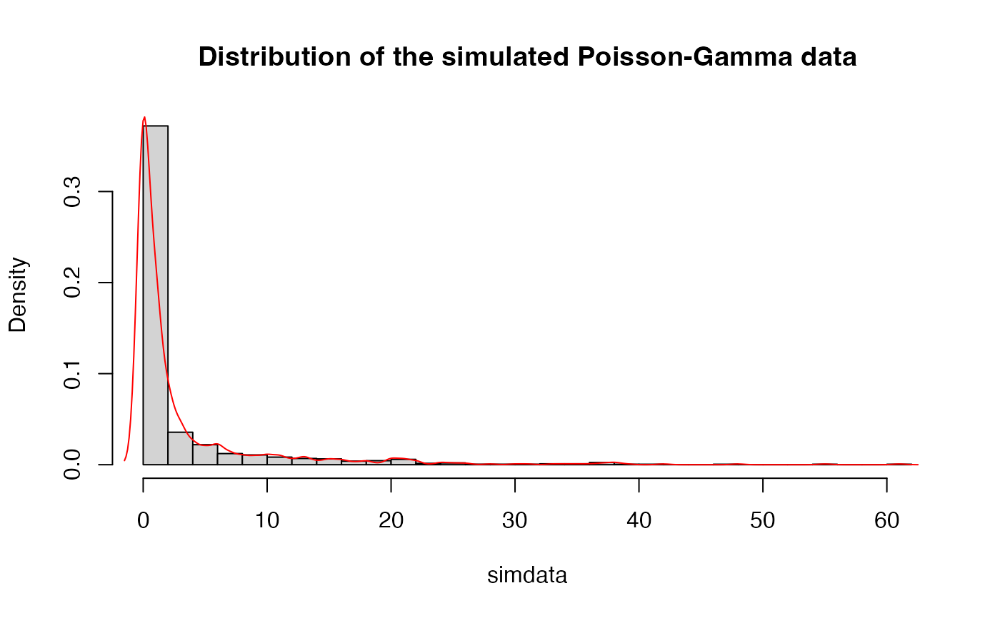

hmm_mcmc_pois.RdMCMC simulation of a Hidden Markov Normal Model for Poisson model
hmm_mcmc_pois(
data,
prior_T,
prior_betas,
prior_alpha = 1,
fix_alpha = TRUE,
iter = 1500,
warmup = floor(iter/1.5),
thin = 1,
seed = sample.int(.Machine$integer.max, 1),
init_T = NULL,
init_betas = NULL,
init_alpha = NULL,
print_params = TRUE,
verbose = TRUE
)(numeric) data
(matrix) prior transition matrix
(numeric) prior beta parameters
(numeric) a single prior alpha parameter. By default, prior_alpha=1
(logical) if TRUE then the alpha parameter is fixed. By default, fix_alpha=TRUE
(integer) number of MCMC iterations
(integer) number of warmup iterations
(integer) thinning parameter. By default, 1
(integer) seed parameter
(matrix) optional parameter; initial transition matrix
(numeric) optional parameter; initial beta parameters
(numeric) optional parameter; initial alpha parameter
(logical) optional parameter; print estimated parameters every iteration. By default, TRUE
(logical) optional parameter; print additional messages. By default, TRUE
List with following elements:
data: data used for simulation
estimates: list with various estimates
idx: indices with iterations after the warmup period
priors: prior parameters
inits: initial parameters
last_iter: list with samples from the last MCMC iteration
info: list with various meta information about the object
Here details
Here references
# Simulate Poisson-gamma data
N <- 2^10
true_T <- rbind(c(0.95, 0.05, 0),
c(0.025, 0.95, 0.025),
c(0.0, 0.05, 0.95))
true_betas <- c(2, 1, 0.1)
true_alpha <- 1
simdata_full <- hmm_simulate_poisgamma_data(L = N,
mat_T = true_T,
betas = true_betas,
alpha = true_alpha)
simdata <- simdata_full$data
plot(density(simdata), main = "")

# Set priors
n_states_inferred <- 3
prior_T <- generate_random_T(n_states_inferred)
prior_betas <- c(1, 0.5, 0.1)
prior_alpha <- 3
# Run MCMC
res <- hmm_mcmc_pois(data = simdata,
prior_T = prior_T,
prior_betas = prior_betas,
prior_alpha = prior_alpha,
iter = 50,
print_params = FALSE,
verbose = TRUE)
#> hmm_mcmc_poisson(): at least one initial rate parameter is greater than the overall variance
#> 10%
#> 20%
#> 30%
#> 40%
#> 50%
#> 60%
#> 70%
#> 80%
#> 90%
#> 100%
res
#> Model: HMM Poisson
#> Type: MCMC
#> Iter: 50
#> Warmup: 33
#> Thin: 1
#> States: 3
summary_res <- summary(res)
#> Estimated betas:
#> beta[1] beta[2] beta[3]
#> 1.8742237 0.3408881 0.1180917
#>
#> Estimated alpha:
#> 1.428274
#>
#> Estimated means:
#> 0.7646206 4.435907 12.11657
#>
#> Estimated transition rates:
#> 1 2 3
#> 1 0.9651845 0.03481551 0.0000000
#> 2 0.1759962 0.01307159 0.8109322
#> 3 0.0000000 0.40245783 0.5975422
#>
#> Assigned states:
#> 1 2 3
#> 655 110 259
#>
#> Approximate Kullback-Leibler divergence:
#> 0.220797
#>
#> Log Likelihood:
#> mean sd median
#> -2162.513855 1.389263 -2162.155514
#>
#> Significance of Difference between Rates (stepwise):
#> [1] 9.650665e-65 4.853066e-203
#>